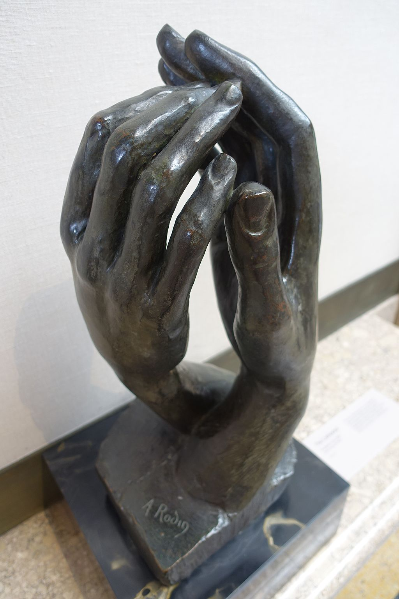

<head>
<meta charset="UTF-8" />
<meta name="keywords" content="drawing, painting" />
<meta name="description" content="drawings by Sunjy" />
<title>Sunjy</title>
<link rel="shortcut icon" type="image/x-icon" href="../../mImages/mCommon/favicon.ico" media="screen" />
<link rel="stylesheet" type="text/css" href="../../mCsses/mCommon/mCssA.css" />
<link rel="stylesheet" type="text/css" href="../../mCsses/mCommon/mCssB.css" />
<link rel="stylesheet" type="text/css" href="../../mCsses/mCommon/mCssC.css" />
<link rel="stylesheet" type="text/css" href="../../mCsses/mCommon/mCssD.css" />
<link rel="stylesheet" type="text/css" href="../../mCsses/mContent/mCssA.css" />
<link rel="stylesheet" type="text/css" href="../../mCsses/mContent/mCssB.css" />
<link rel="stylesheet" type="text/css" href="../../mCsses/mContent/mCssC.css" />
<link rel="stylesheet" type="text/css" href="../../mCsses/mContent/mCssD.css" />
</head>
<script type="text/javascript" src="../../mScripts/mContent/mContentAA.js" /></script>
<script type="text/javascript" src="../../mScripts/mContent/mContentAB.js" /></script>
<script type="text/javascript" src="../../mScripts/mContent/mContentAC.js" /></script>
<script type="text/javascript" src="../../mScripts/mContent/mContentAD.js" /></script>
<script type="text/javascript"></script> 
<script type="text/javascript">
document.write('<div class="mImgAbsolute"></div>');
/*
document.write('<p class="mFontSizeBColor" />From a white paper...</p>');
document.write('<table class="center"><tr><td>');
document.write('');
document.write('</td></tr></table>');
*/
</script>


<script type="text/javascript">
document.write('<p class="mFontSizeBColor" />The Cathedral</p>');
document.write('<p class="mFontSizeSColor" />“The Cathedral” was modeled by Auguste Rodin and depicts two right hands whose fingers are about to touch. The sculpture creates an intimate space between the hands. <br><br>The “Cathedral” was reproduced many times by Rodin. In stone and bronze and every time one element stayed the same, the sculpture is made up of two right hands, each belonging to two different individuals.<br><br>This masterpiece was entitled “The Ark of the Covenant” before being named “The Cathedral.” In the “Two Hands” plaster version, there is an inscribed “Hands of Rodin and Rose Beuret,” which suggests that these hands are the hands of Rodin, the sculptor, and his lover.<br><br>Parallels have been made between the inner space that emanates from this sculpture and Gothic architecture. The emptiness was an essential element of Rodin’s composition. Rainer Maria Rilke pointed out that:<br><br>“The role of air had always been extremely important.” <br><br>Rodin also felt an “intense passion for the expression of the human hands.” During his career, he modeled thousands of hands as small clay studies. <br><br>For Rodin, the hand and the interplay of hands within groups of figures were expressive components of his sculptures.<br><br>Rodin imbued hands with a range of emotions, from anger and despair to compassion and kindness.<br><br>He kept many hand clay studies in his studio, where he would contemplate them as sculptural forms in space.<br></p>');
document.write('<table class="center" /><tr><td>');
document.write('<br>The “Cathedral” was reproduced many times by Rodin. In stone and bronze and every time one element stayed the same, the sculpture is made up of two right hands, each belonging to two different individuals.<br><br>This masterpiece was entitled “The Ark of the Covenant” before being named “The Cathedral.” In the “Two Hands” plaster version, there is an inscribed “Hands of Rodin and Rose Beuret,” which suggests that these hands are the hands of Rodin, the sculptor, and his lover.<br><br>Parallels have been made between the inner space that emanates from this sculpture and Gothic architecture. The emptiness was an essential element of Rodin’s composition. Rainer Maria Rilke pointed out that:<br><br>“The role of air had always been extremely important.” <br><br>Rodin also felt an “intense passion for the expression of the human hands.” During his career, he modeled thousands of hands as small clay studies. <br><br>For Rodin, the hand and the interplay of hands within groups of figures were expressive components of his sculptures.<br><br>Rodin imbued hands with a range of emotions, from anger and despair to compassion and kindness.<br><br>He kept many hand clay studies in his studio, where he would contemplate them as sculptural forms in space.<br>" />');
document.write('</td></tr></table>');
</script>


